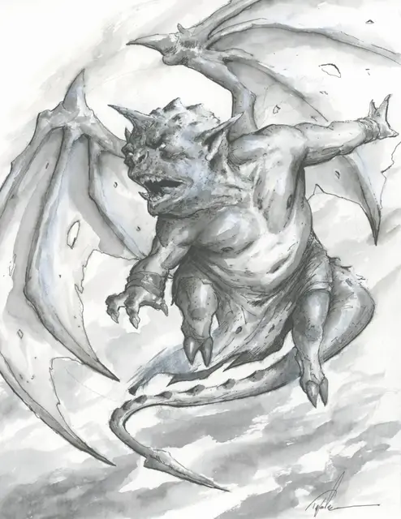

Кричащий дьяволёнок
Screaming Devilkin
Маленькая Фея, законно-злая

Класс Доспеха 17 (природный доспех)
Хиты 18 (4к6 + 4)
Скорость 0 футов, летая 40 футов
| мод | спас | ||
|---|---|---|---|
| СИЛ | 4 | −3 | −3 |
| ЛОВ | 16 | +3 | +3 |
| ТЕЛ | 13 | +1 | +1 |
| мод | спас | ||
|---|---|---|---|
| ИНТ | 5 | −3 | −3 |
| МДР | 8 | −1 | −1 |
| ХАР | 11 | +0 | +0 |
Чувства тёмное зрение 30 футов, пассивное Восприятие 9
Языки Сильван
Опасность 1 (200 опыта)
Бонус мастерства +2
Особенности
Проворный летун. Пока кричащий дьяволёнок летает, провоцированные атаки по нему совершаются с помехой.
Непрерывный крик. Каждое существо, кроме кричащего дьяволёнка, которое начинает свой ход в пределах 30 футов от одного или более кричащего дьяволёнка, должно совершить спасбросок Мудрости Сл 10. При провале существо становится недееспособно до начала своего следующего хода. При успехе, существо не подвергается эффекту.
Низкие ноги. Кричащий дьяволёнок совершает с помехой броски атаки, а все броски атаки по кричащему дьяволёнку совершаются с преимуществом пока он не летает.
Действия
Колючий хвост. Рукопашная атака оружием: +5 к попаданию, досягаемость 5 футов, одна цель. Попадание: 5 (1к4 + 3) колющего урона.
Описание
Остерегайтесь молчаливых дьяволят. Этих ужасных созданий можно усыпить в двух случаях. Они остаются тихими, когда подкрадываются к своей жертве, и издают пронзительные крики, только когда собираются напасть. Они также замолкают в присутствии души, настолько извращенной, грязной и жестокой, что даже дьяволопоклонники замолкают в благоговейном страхе.
Кричащих дьяволят притягивает жестокое зло, как если бы оно было маяком. Вы можете встретить этих существ при дворе жестокого аристократа или подлого некроманта. Если мелкий главарь бандитов или служитель зла низкого ранга заручится поддержкой этих существ, будьте осторожны. Когда дьяволята замечают такого злодея, эта душа оказывается обреченной на темные дела и злую судьбу.
Свирепые кричащие дьяволята - причудливые фейские существа, порожденные сильными моментами паники. Несмотря на их дьявольскую внешность и название, они являются обитателями Страны фей. Мудрецы верят, что их внешность происходит из первобытного страха, внушаемого дьявольскими существами, в то время как барды
утверждают, что паника, будучи такой отталкивающей эмоцией, порождается таким же уродливым существом.
Вопящий Ужас. Вопящий дьяволенок иногда возникает, когда существо в Стране фей охвачено паникой до такой степени, что оно кричит, пускает пузыри или иным образом теряет контроль над своими способностями. Когда такое происходит, крик существа эхом разносится по Стране фей. Если он раздается под правильным углом между скалистыми выступами глубокой ночью, крик приобретает сильные интенсивность и громкость, пока не достигнет пронзительной кульминации. В этот момент, камень разлетается вдребезги, когда небольшая стая кричащих дьяволят вырывается из-под земли и поднимается в воздух.
Злобные мучители. Как и подобает существам, рожденным в момент паники, кричащие дьяволята любят сеять страх и смятение по всему миру. Они собираются в небольшие стаи, прячась вдоль пустынных лесных дорог и горных перевалов. Когда их жертвы приближаются, они дьявольски набрасываются на них, чтобы отхлестать их своими длинными, зазубренными хвостами. Их ужасный визг подавляет чувства существа, вызывая сочетание паники, чувствительной перегрузки и замешательства, от которого существа пошатываются. Несмотря на свою злобную натуру, кричащие дьяволята редко нападают, чтобы убить. Многие из них предпочитают оставлять своих жертв тяжело раненными и лишенными всякой надежды. Дьяволята крадут сокровища, оружие и припасы, обрекая экспедицию на медленную смерть. Дьяволята летают рядом со своими жертвами, дразня их украденными предметами. Хищники в этом районе узнают, что визг чертенка - верный признак приближения легкой добычи.
Возможные союзы. Стая вопящих дьяволят может оценить порочную жестокость в других существах. Если они видят признаки присутствия зла в стране, например, жестокого правителя или злого некроманта, они могут предложить союз, если злодей предоставит им множество возможностей для бессмысленного разрушения и мучений. Эти создания служат своего рода ужасными талисманами, прыгающими вокруг своего нового хозяина и выполняющими приказы с ликованием, чтобы помучить тех, кто неугоден их хозяину.